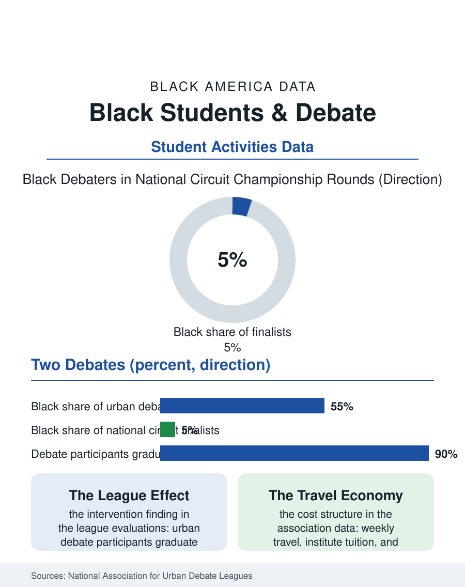

Black Education
Making the Case: Black Students and Debate
Debate is the best-evaluated enrichment activity in the record, and its national circuit is priced like a second college fund while urban leagues rebuild its base. The debate file.

Speech and debate is the activity whose product is the skill every other file in this atlas depends on: a young person, on their feet, making an argument a room must answer. Black students have a storied history in forensics and a thin presence in its current national numbers, concentrated in specific schools and leagues while the circuit's travel economy prices out the rest. This article reads the debate file, from the urban debate leagues that rebuilt the activity's base to the college scholarships at its summit.
The Circuit and Its Price
National circuit debate is an economy: tournament travel most weekends of the school year, entry and judge fees, summer institutes costing thousands, and coaching networks that function as the admissions office of the activity's elite. Participation data from the national association show the predictable distribution of that economy: the championship rounds draw overwhelmingly from well-resourced suburban and private schools, and Black debaters appear at rates far below their share of enrollment. The subject matter compounds the sorting. Policy debate's evidence culture, thousands of pages of research produced at institutes and shared within coaching lineages, rewards accumulated institutional capital; the formats differ in their accessibility, with public forum and Lincoln-Douglas drawing broader rosters and the speech events, oratory and interpretation, carrying a long Black tradition in their own right. That tradition is not decoration: Black speech culture, the church oratory, the fraternity and sorority oratorical contests, the school assembly's set piece, fed generations of Black debaters before the circuit professionalized, and the interpretation events still carry canonical Black literature into rooms that would never otherwise hear it performed at championship level.
The Urban League Answer
The urban debate leagues are the file's structural response and one of the best-evaluated interventions in the activities literature. Beginning with a simple proposition, put debate back into the city public schools as a league sport with local tournaments, funded travel, and teacher-coaches paid for the season, the leagues now operate in dozens of metropolitan areas and serve a student body that is majority Black and Latino by design. The evaluations track what happened next: participating students show higher graduation rates, better reading scores, and higher college enrollment than matched peers, with effects strongest for the students furthest from the activity's traditional base. The mechanism literature points at the practice itself, hundreds of hours of close reading, research, and timed argument being, in effect, an intensive literacy intervention wearing a trophy. The leagues also rebuilt the coaching pipeline, hiring their own alumni, so the activity's expertise now lives inside the communities it serves rather than visiting on weekends. College recruiting took notice on the evidence: debate scholarships at universities with championship programs became a documented pathway for urban league graduates, and several of the nation's top college debate programs now draw measurably from the urban league rolls, an admissions channel as real as any athletic one and considerably cheaper for a family to enter.
Argument as Inheritance
The file's closing chapter is about what the skill is for. The professions where Black Americans remain thinnest at the top, law partnerships, corporate boardrooms, the appellate bench, the anchor desk, are professions of structured public argument, and the pipeline into them runs through exactly the rooms debate trains a student to occupy. Alumni surveys of the urban leagues trace their graduates into law, education, policy, and media at rates the leagues publish with justified pride. The contemporary frontier is reach: the activity's digital formats, recorded preliminary rounds and virtual tournaments, collapsed during the pandemic years and never fully re-inflated, and the cost curve of the national circuit continues to rise against stipend budgets. The leagues' counter is scale through locality, more city tournaments, more school-based squads, and alumni endowments aimed at the one expense that never shrinks, the bus. The debate file closes with its subject's own standard applied to itself. The case for the activity is the strongest in the enrichment record: measured literacy gains, measured graduation gains, a skill that compounds for sixty years. The case against its current distribution is the roster data. Between those two standings, as any debater in the file could tell the room, there is no contest, only an unanswered argument, and the leagues are the rebuttal being built.
More in Black Education
Black Educational Attainment: High School Parity, the College Gap
About 89 percent of Black adults hold a high school diploma and one in four holds a bachelor's degree or higher — the attainment ladder, the college completion gap, and the generational trend.
Historically Black Colleges and Universities: Enrollment and Degrees
More than 100 HBCUs enroll roughly 290,000 students and award about one in six Black bachelor's degrees — an outsized share from a small sector. The federal education data.
Black College Enrollment: 2.4 Million Students
About 2.4 million Black students are enrolled in American colleges — nearly two-thirds of them women. The NCES enrollment data by sector, level, and trend.
Source: National Association for Urban Debate Leagues evaluations; National Speech & Debate Association participation data; urban debate program research.